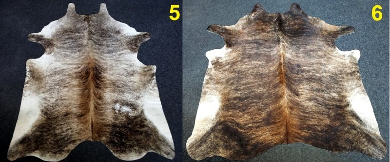

Kilimai | Antiknews
 +37060023888 info@antiknews.lt Vilnius, Kareivių g. 2C Naudotų baldų parduotuvė 0 Items SUPIRKIMAS REZERVACIJA KONTAKTAI STRAIPSNIAI Select Page Pradžia / KilimaiKilimai
Prekes pristatome į visus Lietuvos miestus
Rodomi 1–15 produktai - viso yra 279
“Bukhara” kilimas 34×51 cm
€ 19.00“Bukhara” kilimas 29×31 cm
€ 19.00Kilimas 29×31 cm
€ 19.00Kilimas 30×30 cm
€ 19.00Kilimas 30×34 cm
€ 19.00Kilimas 33×33 cm
€ 19.00Kilimas “Bukhara” 32×94 cm
€ 25.00Kilimas “Bukhara” 32×91 cm
€ 25.00Rankų darbo kilimas 45×62 cm
€ 15.00Rankų darbo kilimas 57×90 cm
€ 29.00Persiškas rankų darbo kilimas 43×70 cm
€ 25.00Kilimas 75×130 cm
€ 45.00Kiliminis takas 67×450 cm
€ 240.00Kilimas 250×340 cm
€ 190.00Kiliminis takas 48×155 cm
€ 25.00 1 2 3 4 … 17 18 19 Price Nauja siunta Išpardavimas Foteliai Foto, video, audio Indai, vazos Dekoratyvinės lėkštės Lėkštės Peleninės Servizai Spalvotas krištolas Stalo įrankiai Vazos Indaujos, sekcijos, bufetai Kabyklos, lentynos, stovai Kailiniai Kėdės Kilimai Nauji kilimai Naudoti kilimai Kiliminiai takai Maži kilimėliai Komodos Sekreterai Laikraštinės, vyninės Laikrodžiai Lauko baldai Lovos Paveikslai Prieškambario baldai Sendaikčiai Sidabras Skulptūros Kolonos Lauko skulptūros Sofos Spintelės Spintos Stalai Valgomojo stalai Staliukai Rašomieji stalai Sekreterai Konsolės Šviestuvai Pakabinami šviestuvai Pastatomi šviestuvai Sieniniai šviestuvai Staliniai šviestuvai Žibalinės lempos Veidrodžiai Židiniai krosnelės Žvakidės Žyma inustrinis loftinis retro vintage vintažinis Facebook Twitter Google RSSVisos teisės saugomos © 2015-2019 naudotibaldai1.lt | Svetainę kūrė Studija 4D